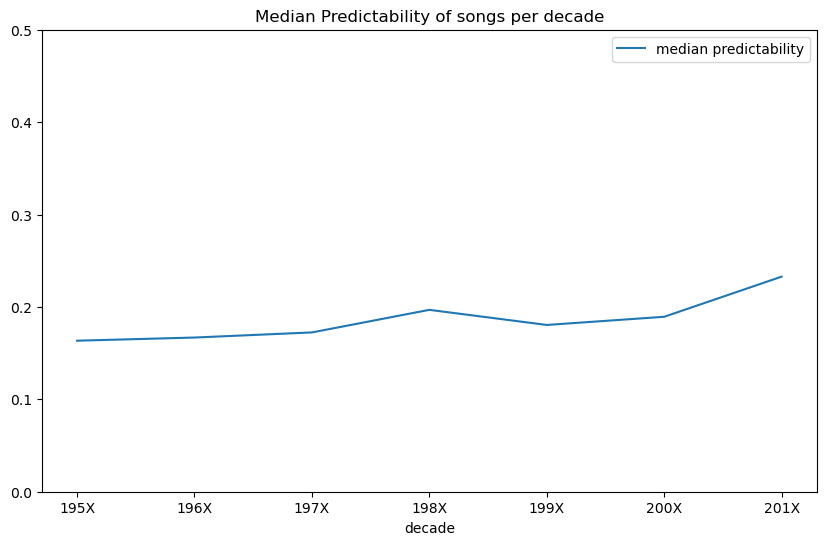

How Predictable: Evaluating Song Lyrics with Language Models
I was briefly nerd-sniped this morning by the following tweet:
https://twitter.com/unixpickle/status/1584761450979299329?s=20&t=TTgENBNO4pb7c1Ar2R7AJg
Can we quantify how ‘predictable’ a set of lyrics are?
Language Models and Token Probabilities
A language model is a neural network trained to predict the next token in a sequence. Specifically, given an input sequence it outputs a probability for each token in its vocabulary. So, given the phrase “Today is a nice” the model outputs one value for every token, and we can look up the probability associated with the token for “day” - which will likely be fairly high (~0.5 in my tests).
We can look at the probabilities predicted for each successive word in a set of lyrics, and take the average as a measure of ‘predictability’. Here’s the full code I used:
import torch
from transformers import AutoModelForCausalLM
from transformers import AutoTokenizer
gpt2 = AutoModelForCausalLM.from_pretrained("gpt2", return_dict_in_generate=True)
tokenizer = AutoTokenizer.from_pretrained("gpt2")
lyrics = """
And my thoughts stay runnin', runnin' (Runnin')
The heartbreaks keep comin', comin' (Comin')
Oh, somebody tell me that I'll be okay
"""
input_ids = tokenizer(lyrics, return_tensors="pt").input_ids
word_probs = []
min_length = 5 # How much do we give to start with
for i in range(min_length, len(input_ids[0])-1):
ids = input_ids[:,:i]
with torch.no_grad():
generated_outputs = gpt2.generate(ids[:,:-1], do_sample=True, output_scores=True,
max_new_tokens=1,
pad_token_id=tokenizer.eos_token_id)
scores = generated_outputs.scores[0]
probs = scores.softmax(-1)
word_probs.append(probs[0][ids[0][-1]])
torch.mean(torch.tensor(word_probs))My starting point was this post by Patrick Von Platen showing how to generate probabilities per token with GPT-2.
Results
The first test: ‘Remind Me’ by Megan Trainor. The mean probability given by the model for the next word given the lyrics up to that point: 0.58!
Trying a few other songs I could think of with less repetitive lyrics:
‘Levitate’ (21 Pilots): 0.34
‘Mom’s Spaghetti’ (MNM): 0.35
The code example above: 0.45
I’m Gonna Be (500 Miles)’ (The Proclaimers): 0.59
There is a caveat worth making which is that anything written before 2019 might be in the model’s training data, and so it might ‘know’ the lyrics already making the measure less informative.
Historical Trends
EDIT: Someone (me) didn’t preview their data well enough, the lyrics I used for this were either badly scraped or very processed, so these scores won’t compare well to the previous section and I need to re-do this with a proper dataset before we can say anything concrete about trends!

Plotting the median estimated predictability per decade for a random sample of ~6k songs
I downloaded a bunch of song lyrics via this dataset and sampled some from different years (1950 - 2019). For each, I estimated the predictability as described above. I found very little correlation (correlation coefficient 0.037 EDIT: 0.06 with a larger sample size) between predictability and year released, but there does seem to be a slight uptick in median predictability over time, especially going into the 2010s, which I’m sure will validate those grumbling about ‘music these days’…
Conclusion
This was fun! Go play with the code and see if your least favourite song is actually as predictable as you think it is. Or perhaps run it over the top 100 current hits and see which is best. I should get back to work now, but I hope you’ve enjoyed this little diversion :)